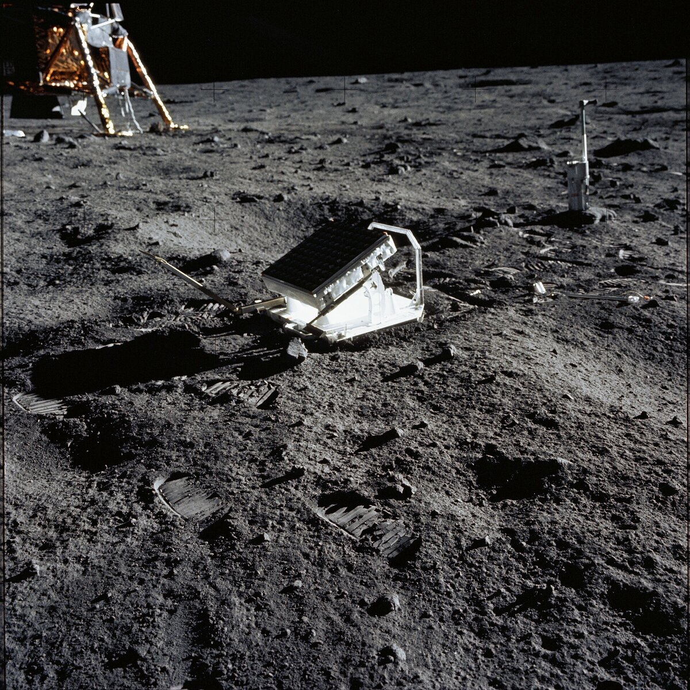

C1 · American History
The Text
Play the audio and follow along, then read it again on your own. Hover over a highlighted word to see what it means.
Listen & Read
Apollo 11
The landing is remembered as a triumph of nerve. It was mostly a triumph of people who had spent years imagining exactly how it would go wrong.
The best-known twelve minutes of the twentieth century were, from inside the spacecraft, a sequence of problems. Nineteen minutes into the descent the guidance computer began raising an alarm — program alarm 1202, then 1201 — which neither Armstrong nor Aldrin recognised. On the ground a twenty-six-year-old engineer named Steve Bales had seconds to decide whether it meant the landing should be abandoned. He said go.
He could say go because of a design decision taken years earlier. The software written by the team under Margaret Hamilton at MIT had been built to assume that it would at some point be given more work than it could do, and to respond by discarding the least important tasks and restarting the essential ones rather than failing altogether. The alarms meant the computer was overloaded and recovering, repeatedly, exactly as designed. The machine doing this had about four kilobytes of memory that could be written to.
Then Armstrong took over manual control, because the computer was steering the craft towards a crater strewn with boulders, and flew on past it looking for level ground. Flying costs fuel. Aldrin read out altitudes while Houston counted down the margin, and the call of sixty seconds, then thirty seconds, became the most quoted part of the transmission. Later reconstruction suggests there was rather more left than the callouts implied, but nobody on the loop knew that at the time.
They landed at 20:17 UTC on 20 July 1969, in the Sea of Tranquillity, about six kilometres from the intended point. Armstrong's first words from the surface were not the famous ones; they were a confirmation that the engine was off and the craft was down.
A third man was not there. Michael Collins remained in lunar orbit in the command module, alone, losing radio contact with everyone on each pass behind the Moon — forty-eight minutes at a time in which he was, by a common formulation, the most isolated human being who had ever lived. He later wrote that he did not feel lonely so much as aware that if the ascent engine failed he would be going home by himself, and that he had rehearsed that flight.
That possibility had been prepared for on the ground too. William Safire, then a speechwriter in the Nixon White House, had drafted a statement to be read if the crew could not lift off: "Fate has ordained that the men who went to the Moon in peace will stay on the Moon to rest in peace." The plan was that contact would be closed out, a clergyman would commend their souls to the deep, and the President would telephone the widows first. The text was declassified in 1999 and had never been needed.
The walk itself lasted about two and a half hours. They took photographs, planted a flag stiffened with a wire rod because there is no wind, collected twenty-one and a half kilograms of rock and soil, and set out three experiments. One was a sheet of foil to catch particles from the solar wind. One was a seismometer. The third was a panel of corner-cube mirrors, and it is the reason the landing is still, in a narrow sense, in use: observatories on Earth continue to bounce lasers off it, which is how the distance to the Moon is known to within a few centimetres and how we know it is receding at about 3.8 centimetres a year.

They also left a plaque, a silicon disc carrying goodwill messages from seventy-three countries, and a good deal of equipment they no longer needed, because every kilogram left behind was a kilogram the ascent engine did not have to lift. Among it, by most accounts, was a bag of rubbish.
An estimated six hundred million people watched, on a television signal of famously poor quality, and the slow-scan tapes of the original broadcast were later wiped and reused — the highest-quality recording of the event was destroyed through ordinary institutional carelessness.
What the mission demonstrated was not courage, which was not in short supply anywhere in the twentieth century, but something rarer: that four hundred thousand people could be organised to anticipate failure so thoroughly that when the failures came, on schedule, there was already an answer for each one. The flags and the footprints are what we remember. The alarm handler is the achievement.
Vocabulary
- a descent — a movement downwards
- to abandon — to stop doing something before it is finished
- to overload — to give something more to carry or process than it can manage
- strewn — scattered untidily over a surface
- a boulder — a very large rock
- a margin — the amount of something available beyond what is strictly needed
- an ascent — a movement upwards
- to ordain — to order or decide something with authority
- to recede — to move gradually further away
- to anticipate — to expect something and prepare for it
Interactive Exercises
Practice
Complete each exercise, then click Submit to see your score and an explanation for every answer.
Speaking & Writing
Discussion
There are no right answers here — use these to practice speaking, or write a short answer to each.
- The text says we remember the flags and the footprints, but that the real achievement was the preparation for failure. Why is the second kind of achievement so much harder to celebrate?
- A speech had been written in case the crew died on the Moon. What does it tell you about the mission that this document existed?
- The best recordings of the broadcast were wiped and reused. How should institutions decide what is worth keeping while it is still happening?